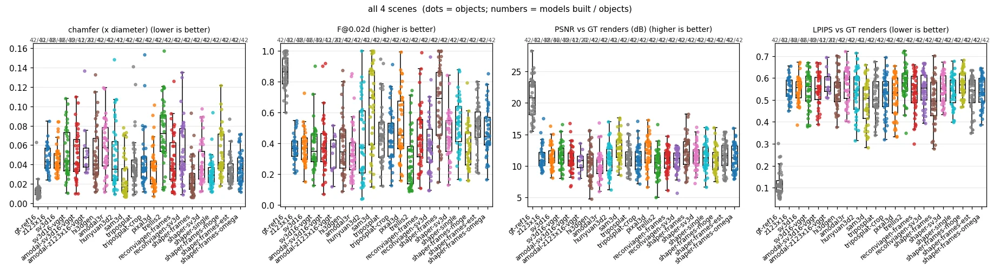
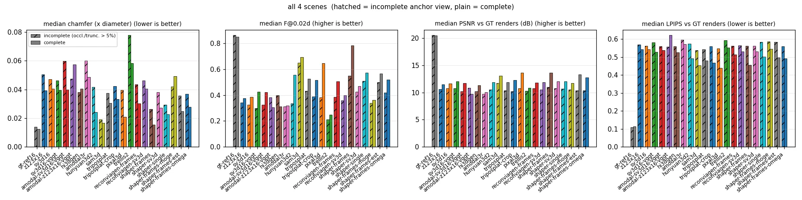
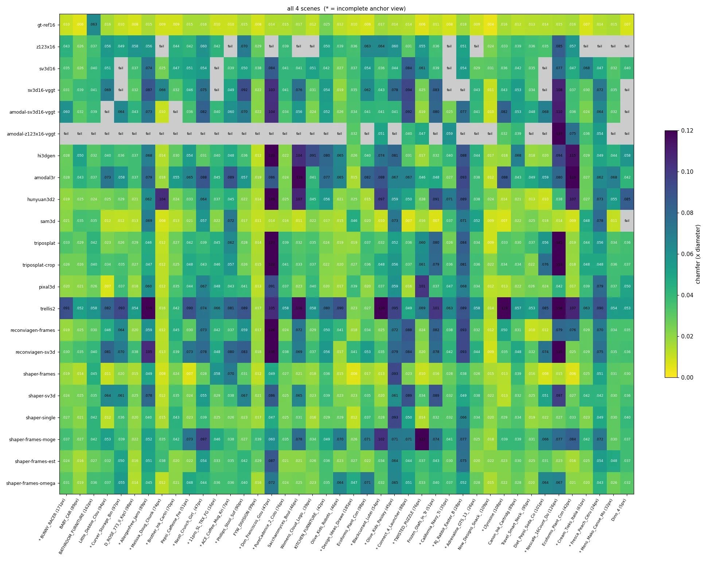
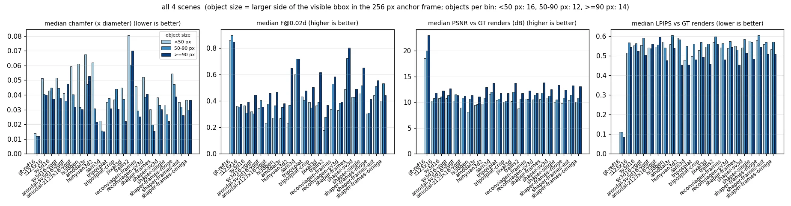
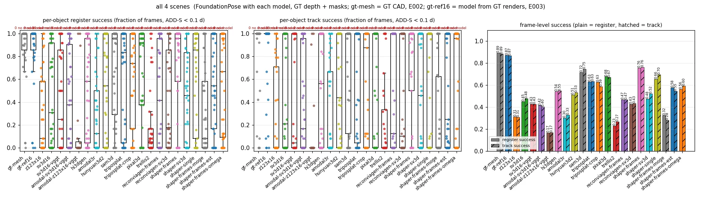
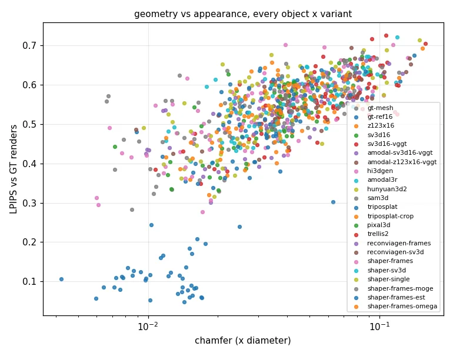
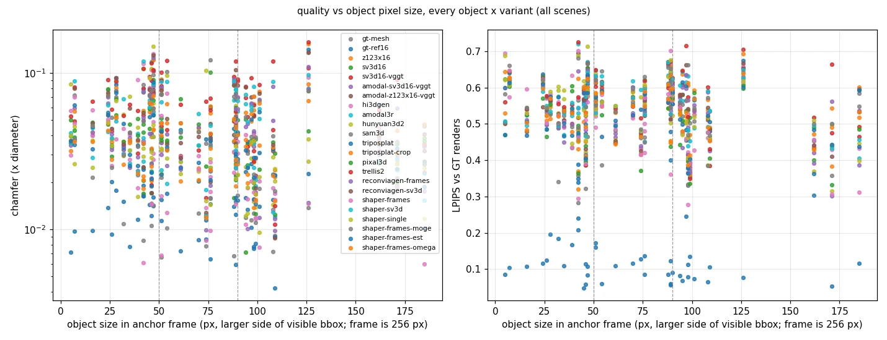
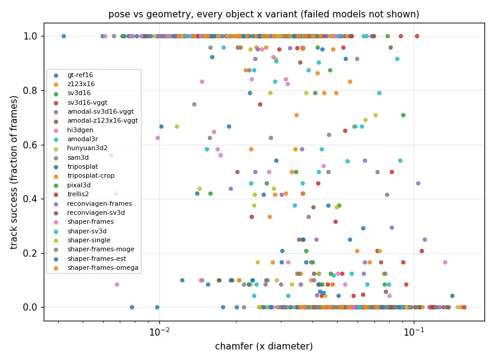

These bar charts compare every 3D-reconstruction method we tried for fixing poor object pose estimates, from naive synthetic-multiview tricks to swapping out the image-to-3D model entirely, scored against ground-truth shapes and poses on 4 Kubric MoVi-D scenes, and SAM3D and ShapeR come out clearly best on both reconstruction quality and pose success.
| variant | built | chamfer | F | PSNR | LPIPS | chamfer inc | chamfer comp | chamfer <50 px | chamfer 50-90 px | chamfer >=90 px | LPIPS <50 px | LPIPS 50-90 px | LPIPS >=90 px | pose: register success | pose: track success | track inc | track comp |
|---|---|---|---|---|---|---|---|---|---|---|---|---|---|---|---|---|---|
| gt-mesh | 41/41 | - | - | - | - | - | - | - | - | - | - | - | - | 0.892 | 0.887 | 0.845 | 0.944 |
| gt-ref16 | 42/42 | 0.013 | 0.861 | 20.79 | 0.109 | 0.014 | 0.012 | 0.014 | 0.012 | 0.012 | 0.111 | 0.112 | 0.086 | 0.872 | 0.870 | 0.847 | 0.901 |
| z123x16 | 31/42 | 0.043 | 0.364 | 10.88 | 0.546 | 0.050 | 0.039 | 0.051 | 0.041 | 0.040 | 0.515 | 0.568 | 0.545 | 0.314 | 0.308 | 0.235 | 0.405 |
| sv3d16 | 38/42 | 0.041 | 0.367 | 11.07 | 0.555 | 0.047 | 0.041 | 0.043 | 0.045 | 0.037 | 0.553 | 0.564 | 0.524 | 0.450 | 0.479 | 0.390 | 0.597 |
| sv3d16-vggt | 36/42 | 0.043 | 0.346 | 11.66 | 0.560 | 0.046 | 0.040 | 0.052 | 0.045 | 0.038 | 0.556 | 0.592 | 0.505 | 0.429 | 0.429 | 0.363 | 0.517 |
| amodal-sv3d16-vggt | 39/42 | 0.041 | 0.368 | 10.86 | 0.552 | 0.060 | 0.040 | 0.041 | 0.036 | 0.048 | 0.543 | 0.538 | 0.562 | 0.416 | 0.405 | 0.313 | 0.528 |
| amodal-z123x16-vggt | 11/21 | 0.047 | 0.378 | 10.88 | 0.558 | 0.047 | 0.057 | 0.059 | 0.040 | 0.032 | 0.547 | 0.558 | 0.595 | 0.168 | 0.171 | 0.271 | 0.000 |
| hi3dgen | 42/42 | 0.040 | 0.343 | 10.54 | 0.559 | 0.038 | 0.040 | 0.061 | 0.032 | 0.030 | 0.572 | 0.543 | 0.477 | 0.543 | 0.548 | 0.598 | 0.483 |
| amodal3r | 42/42 | 0.057 | 0.318 | 9.80 | 0.593 | 0.060 | 0.049 | 0.068 | 0.047 | 0.053 | 0.560 | 0.606 | 0.540 | 0.303 | 0.331 | 0.309 | 0.360 |
| hunyuan3d2 | 42/42 | 0.035 | 0.370 | 11.18 | 0.543 | 0.042 | 0.024 | 0.062 | 0.031 | 0.022 | 0.593 | 0.584 | 0.454 | 0.514 | 0.534 | 0.516 | 0.557 |
| sam3d | 41/42 | 0.017 | 0.693 | 12.89 | 0.507 | 0.019 | 0.017 | 0.022 | 0.016 | 0.015 | 0.479 | 0.551 | 0.455 | 0.716 | 0.746 | 0.637 | 0.891 |
| triposplat | 42/42 | 0.034 | 0.445 | 11.09 | 0.503 | 0.038 | 0.030 | 0.035 | 0.038 | 0.031 | 0.499 | 0.562 | 0.482 | 0.632 | 0.634 | 0.524 | 0.781 |
| triposplat-crop | 42/42 | 0.036 | 0.414 | 10.79 | 0.533 | 0.042 | 0.033 | 0.037 | 0.044 | 0.030 | 0.529 | 0.571 | 0.494 | 0.627 | 0.587 | 0.468 | 0.747 |
| pixal3d | 42/42 | 0.037 | 0.452 | 12.04 | 0.532 | 0.040 | 0.021 | 0.045 | 0.037 | 0.022 | 0.547 | 0.563 | 0.460 | 0.677 | 0.672 | 0.574 | 0.803 |
| trellis2 | 42/42 | 0.072 | 0.245 | 10.53 | 0.579 | 0.078 | 0.058 | 0.081 | 0.061 | 0.070 | 0.571 | 0.599 | 0.559 | 0.231 | 0.268 | 0.191 | 0.371 |
| reconviagen-frames | 42/42 | 0.036 | 0.428 | 11.23 | 0.537 | 0.043 | 0.030 | 0.046 | 0.029 | 0.025 | 0.542 | 0.563 | 0.482 | 0.470 | 0.469 | 0.402 | 0.557 |
| reconviagen-sv3d | 42/42 | 0.043 | 0.367 | 11.15 | 0.555 | 0.046 | 0.040 | 0.052 | 0.039 | 0.040 | 0.539 | 0.574 | 0.543 | 0.429 | 0.433 | 0.311 | 0.597 |
| shaper-frames | 42/42 | 0.021 | 0.688 | 12.21 | 0.496 | 0.026 | 0.015 | 0.030 | 0.020 | 0.015 | 0.552 | 0.531 | 0.456 | 0.757 | 0.763 | 0.687 | 0.864 |
| shaper-sv3d | 42/42 | 0.035 | 0.436 | 11.59 | 0.550 | 0.038 | 0.027 | 0.038 | 0.033 | 0.030 | 0.543 | 0.585 | 0.516 | 0.475 | 0.522 | 0.434 | 0.640 |
| shaper-single | 42/42 | 0.029 | 0.536 | 11.31 | 0.543 | 0.029 | 0.023 | 0.033 | 0.027 | 0.022 | 0.577 | 0.570 | 0.486 | 0.657 | 0.697 | 0.647 | 0.763 |
| shaper-frames-moge | 42/42 | 0.042 | 0.344 | 10.62 | 0.569 | 0.042 | 0.049 | 0.054 | 0.047 | 0.039 | 0.579 | 0.606 | 0.546 | 0.325 | 0.283 | 0.271 | 0.299 |
| shaper-frames-est | 42/42 | 0.030 | 0.511 | 11.58 | 0.544 | 0.036 | 0.025 | 0.035 | 0.032 | 0.026 | 0.559 | 0.570 | 0.509 | 0.578 | 0.546 | 0.434 | 0.696 |
| shaper-frames-omega | 42/42 | 0.036 | 0.444 | 11.25 | 0.534 | 0.037 | 0.028 | 0.036 | 0.030 | 0.037 | 0.533 | 0.573 | 0.509 | 0.564 | 0.595 | 0.538 | 0.672 |







